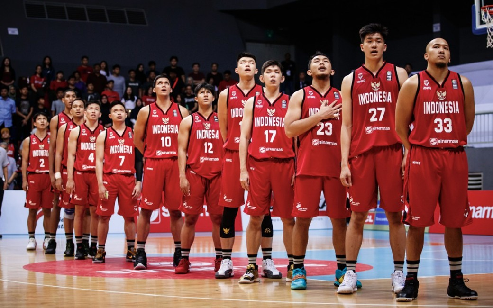

Bola basket merupakan salah satu jenis olahraga yang menggunakan bola besar. bola dimainkan secara berkelompok yang terdiri dari dua tim yang masing-masing beranggotakan lima orang. Kedua tim tersebut bersaing untuk mencetak poin sebanyak-banyaknya dengan cara memasukkan bola ke ring/basket lawan.
Cara bermain atau teknik dasar futsal secara umum mirip dengan teknik dasar sepakbola.
1.Passing atau Umpan Passing atau mengumpan merupakan teknik dasar yang harus dikuasai para pemain basket. Teknik ini dilakukan dengan cara mengayunkan tangan hingga mengenai bola. Passing bisa menggunakan tangan bagian luar, dalam, punggung, dan sisi samping
2.Kontrol Bola Teknik dasar basket lainnya adalah kontrol bola. Adapun kontrol bola dilakukan dengan menggunakan tangan bagian dalam dan luar. Kontrol bola memanfaatkan sol sepatu untuk menghentikan laju bola dan menguasainya.
3.Dribbling Setiap pemain bakset haruslah menguasai teknik dribbling. Tujuan dari teknik dribbling ini adalah pemain dapat melewati pemain lawan sambil membawa bola. Teknik dribbling bisa menggunakan tangan bagian dalam, luar, dan punggung.
4.Shooting shooting merupakan teknik dasar basket memanfaatkan bagian ujung sepatu. Jika seorang pemain memiliki teknik shooting yang mumpuni, maka semakin besar pula peluangnya untuk mencetak gol.
5.Tackling Tackling atau menyeleding bola merupakan teknik dasar yang digunakan untuk merebut bola dari lawan. Namun untuk melakukan tackling haruslah hati-hati. Hal ini demi mengurangi risiko cedera pemain. Tackling dapat dilakukan dengan berdiri (standing) dan meluncur.
6.jumping Heading merupakan teknik dasar futsal yang memanfaatkan bagian tangan Bagian kepala yang digunakan untuk memasuki bola.
1. Ukuran Lapangan Bola Basket - Panjang: 28 meter - Lebar: 15 meter - Diameter lingkaran tengah: 3,6 meter - Jarak garis tiga poin ke ring: 6,75 meter - Jarak garis busur ring basket: 1,25 meter
2. Namun pada dasarnya, berat minimal dan maksimal bola basket adalah 580-620 gram dengan keliling 75-77 cm mengacu aturan Federasi Bola Basket Dunia (FIBA) untuk ukuran size 7
3. Ukuran Ring dan Tiangnya - Tinggi ring: 3,05 meter - Diameter ring: 45cm - Jarak tiang ring ke endline: 1 meter - Panjang papan pantul: 1,8 1,05 meter - Ukuran kotak tengah papan pantul: 59x45cm - Jarak papan pantul ke endline: 1,2 meter
4. Jumlah pemain dalam permainan bola basket adalah 5 orang dalam satu regu dengan cadangan 5 orang. Sedangkan jumlah wasit dalam permainan bola basket adalah 2 orang. Wasit 1 disebut referee sedangkan wasit 2 disebut umpire.
5. Waktu Waktu permainan 4 x 10 menit jika berpedoman dengan aturan Federasi Bola Basket Internasional. Versi National Basketball Association waktu bermain adalah 4 x 12 menit. Di antara babak 1, 2, 3, dan babak 4 terdapat waktu istirahat selama 10 menit.
6. Wasit Jumlah wasit dalam permainan bola basket adalah tiga orang. Satu orang sebagai wasit utama yang disebut referee. Kemudian satu wasit berperan sebagai asisten wasit disebut umpire. Adapun satu sisanya adalah wasit pencatat atau scorer.
7. Pelanggaran Foul. Foul adalah kondisi menahan lawan dengan posisi defense yang salah. Traveling Offensive Foul Foul Out Technical Foul Double Dribble Three Second Violation Offensive 3 Second
Mengeluarkan kata-kata yang tidak pantas. Tetap melakukan pelanggaran, meski telah diberi peringatan. Mengulur-ngulur waktu dimulainya kembali pertandingan. Melanggar jarak saat tendangan hukuman berlangsung. Melanggar prosedur pergantian pemain. Sengaja meninggalkan lapangan tanpa seizin wasit.
- Kartu Merah Seorang pemain yang diberikan kartu merah, diharuskan untuk meninggalkan lapangan pertandingan dan tidak diperbolehkan bermain lagi. Kartu merah diberikan jika:
Bersalah, bermain sangat kasar. Bersalah, berkelakuan kasar. Meludahi lawan atau orang lain. Menghalangi gol yang dibuat tim lawan dengan menggunakan tangan. Secara jelas menggagalkan secara ilegal kesempatan lawan untuk mencetak gol. Menggunakan kata-kata yang bersifat menghina. Menerima kartu kuning kedua.
Adapun pemuncak klasemen FIBA masih dikuasai Amerika Serikat (AS) dengan 834,6 poin. Sedangkan untuk Timnas Elite Putra sukses naik 11 tingkat dari peringkat yang dirilis 21 Agustus 2023 lalu. Pada klasemen terbaru FIBA, Timnas Basket Putra Indonesia saat ini berada di peringkat ke-74 dengan koleksi 123,1 poin. 
Bola.net - Bersama Filipina dan Jepang, Indonesia dapat kehormatan menjadi tuan rumah Piala Dunia Basket 2023 atau FIBA World Cup 2023 pada 25 Agustus-10 September 2023. Namun, dari tiga negara ini, hanya Indonesia yang tidak tampil dalam kejuaraan basket bergengsi tersebut.
10123154
IF-4
Universitas Komputer Indonesia
Juara Liga Locomotif
Sertifikat Kompetensi SMK
Punya Planning Hidup